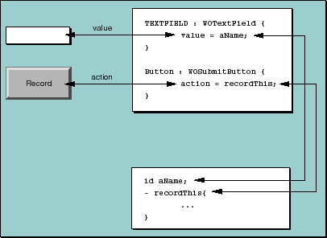

Table of Contents
Table of Contents  Next Section
Table of Contents
Next Section
Table of Contents  Previous Section
Previous Section
Choose between the following menu options:<BR><BR>Each WEBOBJECT tag denotes the position of a dynamic element. Notice that the tag specifies only where the dynamic element should go; it does not specify the dynamic element's type. The type is specified in the .wod file:
<WEBOBJECT NAME="OPTION_REPETITION">
<WEBOBJECT NAME="OPTION_LINK">
<WEBOBJECT NAME="OPTION_NAME"></WEBOBJECT>
</WEBOBJECT>
</WEBOBJECT>
OPTION_REPETITION:WORepetition {
list = allOptions;
item = currentOption
};
OPTION_LINK:WOHyperlink {
action = pickOption
};
OPTION_NAME:WOString {
value = currentOption
};
In the .wod file, each element is identified by name and then its type is specified. The outermost dynamic element in the HTML file (OPTION_REPETITION) defines a WORepetition, the next element is a WOHyperlink, and the innermost element is a WOString. Each type specification is followed by a list of attributes. Dynamic elements define several attributes that you bind to different values to configure the element for your application. Usually, you bind attributes to variables or methods from your component's code (see Figure 12).

Figure 12. Dynamic Element Bindings
Table of Contents Next Section